Ein ehrliches Werkzeug, verpackt wie gutes Essen.
Dieses Moodboard ist das gemeinsame Bild, mit dem der Corporate-Design-Schritt startet. Es zeigt die vier Referenzen, was wir von jeder übernehmen und was nicht, und leitet daraus Prinzipien ab: Farbe, Schrift, Illustration, Menschen an den Stationen.
Grundlage ist das freigegebene Fundament (docs/decisions/brand-foundation.md). Die Basis bleibt „Teig & Terminal“. Hier geht es darum, wohin sie sich bewegt.
Wo wir stehen: „Teig & Terminal“
Freigegeben am 2026-10-22. Die visuelle Basis trägt, die Geschichte darin ist aber die alte: nur Werkzeuge an der Theke, der Mensch erst am Ende, Demo als Hauptaktion.
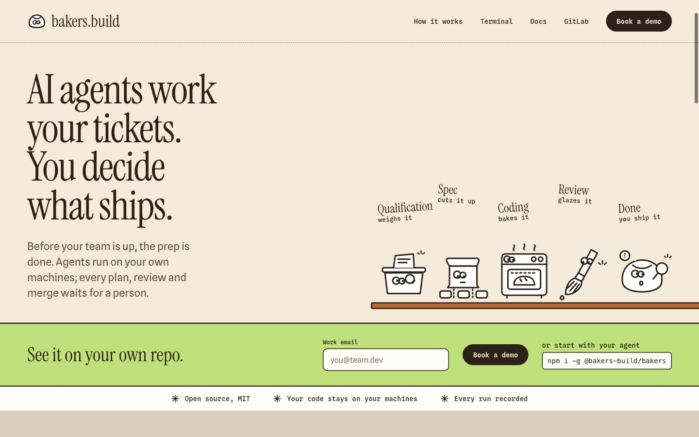
bleibt
- Mehl als Grund, Roggen statt Schwarz: hell, warm, nicht Sci-Fi.
- Das Terminal in Roggenbraun als ehrlicher Kern.
- Monoline-Werkzeuge als Agenten.
- Butter für alles, was auf dich wartet.
- Der Proof-Streifen: Open source, MIT · Your code stays on your machines · Every run recorded.
ändert sich
- An jeder Station steht ein Mensch, nicht nur am Ende.
- Headline ohne „tickets“ und ohne Entscheidung nur am Schluss.
- Hauptaktion „Start a free trial“ statt „Book a demo“.
- Die Display-Schrift wird neu entschieden.
- Die Figuren arbeiten, sie sind nicht niedlich.
Vier Referenzen, und was wir von jeder nehmen
Keine davon wird kopiert. Jede liefert genau eine Sache, die uns fehlt, und jede hat etwas, das wir ausdrücklich nicht wollen.
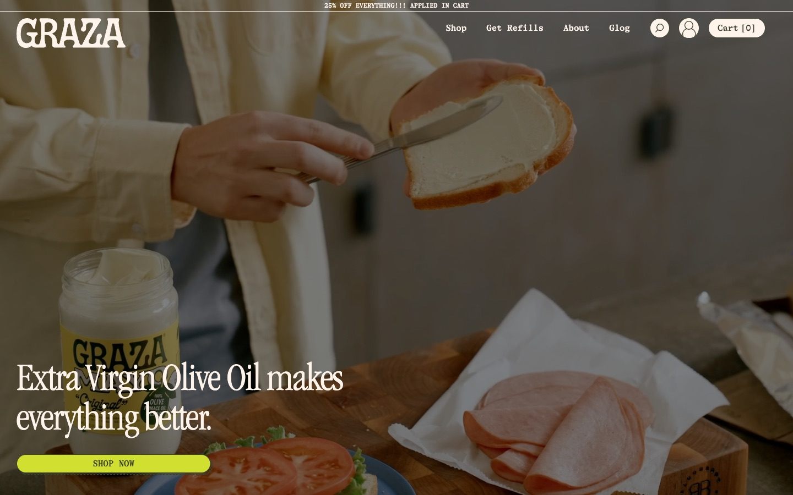
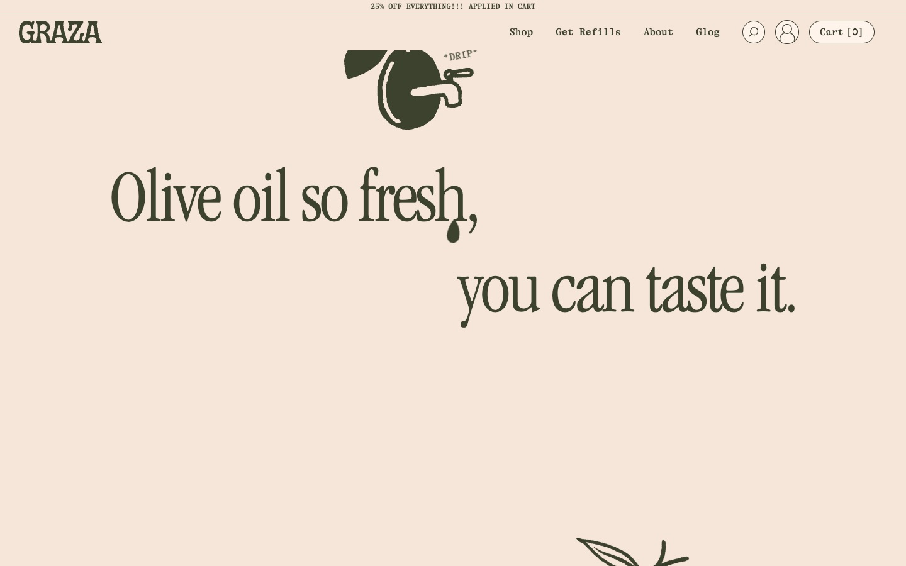
graza.co
Die Referenz für „lecker“: ein Produkt, das man mag, bevor man es versteht.
übernehmen
- Flache, satte Food-Farben auf Seitengröße
- Eine schmale Serife mit Charakter als Stimme
- Eine schwarze Linie, die Illustration und Text verbindet
- Der Witz steht klein am Rand („*DRIP“)
nicht übernehmen
- Video-Hero mit Food-Fotos
- Rabatt-Banner, Shop-Ton, drei Ausrufezeichen
- Grün-Oliv als Markenfarbe
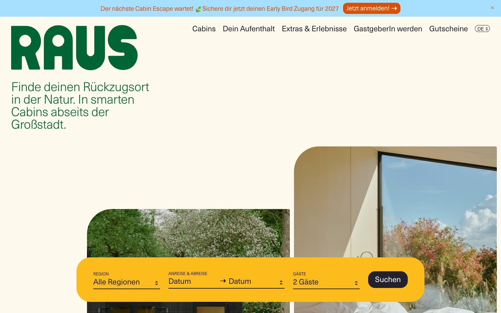
raus.life
Die Referenz für Ruhe: viel Luft, eine klare Handlung, nichts drängt.
übernehmen
- Die Hauptaktion als ein breites, warmes Farbfeld
- Große Ruhe auf hellem Grund
- Eine freundliche, schlichte Grotesk für Fließtext
- Runde, weiche Formen statt Kanten
nicht übernehmen
- Naturfotografie als Träger
- Das Grün und das Neon-Orange
- Promo-Leiste oben
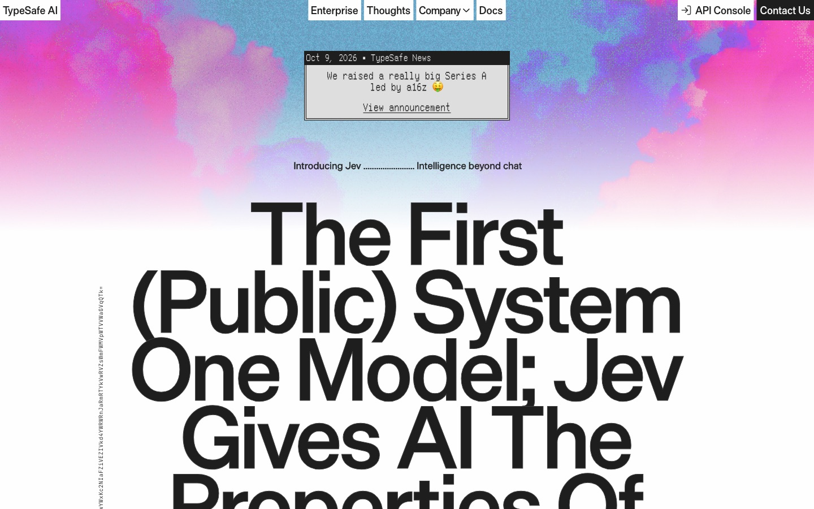
typesafe.ai
Die Referenz für technische Ehrlichkeit. Gleichzeitig die, der wir am wenigsten ähneln dürfen.
übernehmen
- Monospace nur dort, wo echte Daten und Befehle stehen
- Fenster-Rahmen als ehrliches Zitat des Terminals
- Selbstbewusste Größe der Headline
nicht übernehmen
- Wolken-Verläufe in Pink und Blau: genau das Sci-Fi, das wir meiden
- Schwarz-Weiß-Tech-Look und Grotesk-Wand
- Funding-Pose („a really big Series A“)
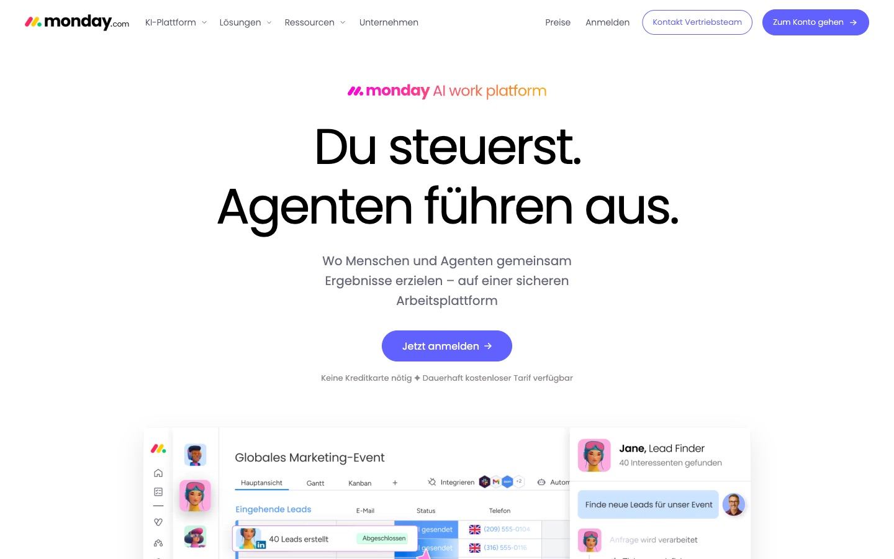
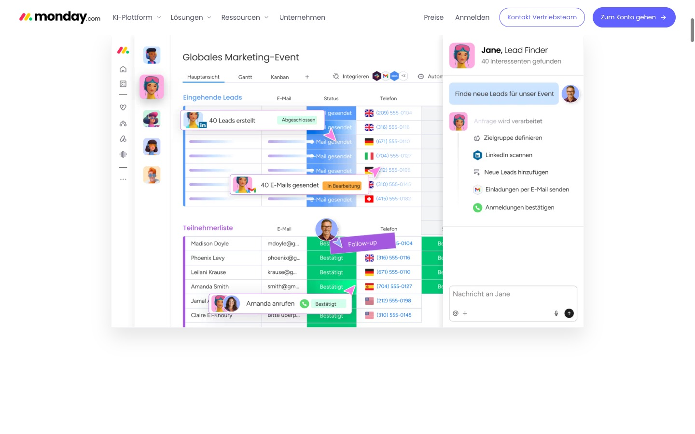
monday.com
Die Referenz für Agenten als Charaktere neben Menschen. Ohne den 3D-Look.
übernehmen
- Agenten haben eine Rolle und stehen sichtbar neben Menschen
- Jeder Agentenschritt als lesbare Statuszeile
- Die Hand des Menschen im Bild („Follow-up“)
nicht übernehmen
- 3D-Avatare mit Gesichtern
- Lila Verläufe, SaaS-Template-Layout
- Fake-Personen und Fake-Daten im Produktbild
Achtung, Kernzeile: monday titelt „Du steuerst. Agenten führen aus.“ Unser Headline-Kandidat „You're the baker. Agents run the line.“ hat exakt dieselbe Struktur: Mensch-Satz, dann Agenten-Satz.
Neben der größten Plattform im Feld liest sich das wie eine Variante. Vorschlag: im Copy-Schritt Option 2 („Your recipes. Your line.“) als Headline prüfen oder Option 1 umbauen, so dass Bild und Satz die Station tragen statt die Arbeitsteilung.
Farbe: Mehl, Roggen und drei Zutaten
Die Palette aus „Teig & Terminal“ bleibt. Neu ist eine feste Rolle für jede Farbe, damit sie etwas bedeutet und nicht nur schmückt. Kontraste sind gegen Mehl gemessen, Food-Farben gegen Roggen.
Food-Farben kommen als ganze, flache Flächen auf Seitengröße, wie bei Graza. Kein Verlauf, kein Glow.
Jeder Abschnitt hat höchstens eine Food-Farbe als Fläche. Butter ist reserviert für das, was auf eine Person wartet.
Das bisherige Muted #7D6C58 erreicht auf Mehl nur 4,3 : 1. Neu: #6E5D49 mit 5,4 : 1, oder gleich Roggen 2.
Schrift: die Display-Stimme wird neu entschieden
Instrument Serif ist als überstrapaziert markiert, und Graza nutzt eine sehr ähnliche schmale Serife. Hier stehen vier Kandidaten mit derselben Zeile. Die Entscheidung fällt im CD-Schritt.
text bleibt: spline sans
Freundlich und gut lesbar, hat den Raus-Ton.
daten bleiben: spline sans mono
playwright · 12 passed, 0 failed
Nur für Befehle, States, IDs und Zahlen. Nie als Kostüm für „technisch“.
Illustration: Werkzeuge arbeiten, sie posieren nicht
Eine Roggenlinie, weiße Füllung, Glupschaugen nur an Werkzeugen. Aktionszeichen (Funken, Dampf, „!“) sagen, was gerade passiert. Keine Münder, keine Wangen.
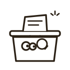
Qualificationweighs it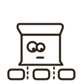
Speccuts it up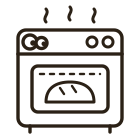
Codingbakes it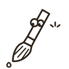
Reviewglazes itso
- Website: Hero und höchstens zwei weitere Stellen
- App: leere Zustände und 22-px-Werkzeug-Icons
- Die Figur zeigt eine Tätigkeit, keine Laune
- Bäcker-Verben nur als Bildunterschrift auf der Website
nicht so
- Figuren als Tapete oder in jedem Abschnitt
- Gesichter mit Mund, Wangen, Emotionen
- Figuren in Fehlern oder Entscheidungsmomenten
- Bäcker-Wörter als State-Namen in App oder Terminal
Menschen an den Stationen
Die größte Lücke im Mock. Die Bäcker sind die Menschen. Sie stehen an jeder Station neben dem Werkzeug. Wer das ist, wechselt: der Kunde in Qualification und Spec, Entwickler oder Lead in Coding und Review. Zwei Konzepte zur Wahl, beide skizzenhaft.
Gezeichnete Menschen mit Schürze
Dieselbe Linie wie die Werkzeuge, aber ruhiger: Punktaugen statt Glupschaugen, keine Aktionszeichen außer der Geste. Die Schürze macht sie zu Bäckern, ohne Mütze und ohne Kostüm.
Echte Menschen im Avatar-Kreis unter jedem Werkzeug
Gewählt am 2026-10-23. Die Werkzeuge bleiben gezeichnet, die Menschen sind echt: ein Foto im Butter-Ring mit Rolle und Tätigkeit. In der App ist das der Avatar der Person, die an der Station wirklich dran ist. Die Platzhalter stehen für Porträts von Unsplash oder KI-generiert. Sie zeigen nur Rollen: keine Namen, keine Zitate, nie als Kunden ausgegeben.
Konzept A bleibt als verworfene Variante zum Vergleich stehen. Die gezeichneten Werkzeuge sind Konzept, keine Endzeichnung.
Das Terminal bleibt der ehrliche Kern
Dieselben Farben und dieselben Wörter wie im Web. Butter heißt hier wie dort: wartet auf dich.
- Kleinschreibung im Terminal, Satzanfang groß im Web.
- State-Namen bleiben technisch: qualification, spec, coding, review, done.
- „you“ markiert, wo eine Person entscheidet.
- Keine Bäcker-Wörter, keine Witze in Fehlern.
$ bakers ui BB-162 qualification waiting for you BB-151 coding running 12:08 · 62k tokens BB-149 review verdict ready · your call BB-140 done merged by ms · 2 runs [a] approve [r] send back [/] search [?] help
Was wir nicht sein wollen
Die Anti-Ziele aus dem Fundament, als Bild gedacht. Woran ein Entwurf scheitert, auch wenn er technisch funktioniert.
Schwarzes Loch, Sterne, lila Verlauf. Das ist die heutige Website. Sie fliegt raus.
Dark Mode als Markenauftritt. Dark gibt es in der App, nicht als Hero.
Glänzende Figuren mit Gesicht im monday-Stil.
Gleiche Karten mit Icon, Titel, Text als Seitenstruktur, Pillen überall, Kicker über jeder Überschrift.
Bäcker-Wortspiele, Emoji, Figuren als Dekoration. Ein Augenzwinkern pro Seite.
Ein Satz, drei Takte. Der Rest gehört in Beispiele und Demos.
Entschieden für den CD-Schritt
- Display-Schrift: Bricolage Grotesque
Entschieden 2026-10-23. Löst die Nähe zu Graza und den Overuse von Instrument Serif. Folge: die Wortmarke wird in Bricolage neu gesetzt, Wärme kommt aus Mehl, Farben und Figuren statt aus der Serife.
- Menschen: Konzept B mit echten Fotos
Entschieden 2026-10-23. Echte Menschen im Avatar-Kreis unter jedem Werkzeug, in der App der echte Avatar.
- Kernzeile bleibt
Entschieden 2026-10-23: „You're the baker. Agents run the line.“ bleibt Headline-Kandidat, die Nähe zu monday ist bekannt.
- Farbrollen wie vorgeschlagen
Entschieden 2026-10-23. Butter wartet auf dich und trägt die Hauptaktion, Limette läuft und ist gut, Rose ist Review, Kruste nur Grafik.